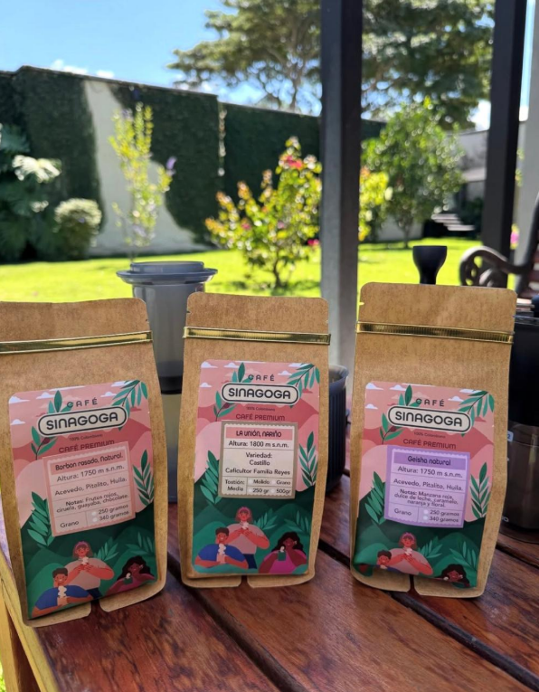
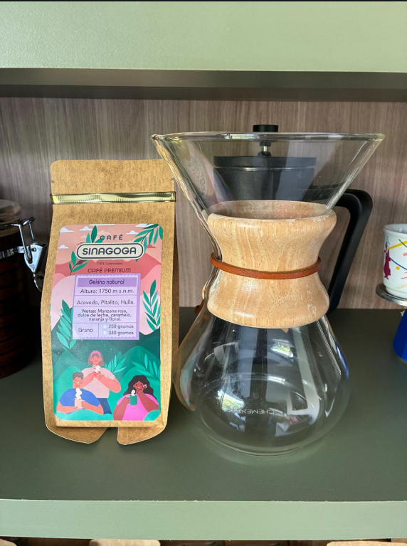
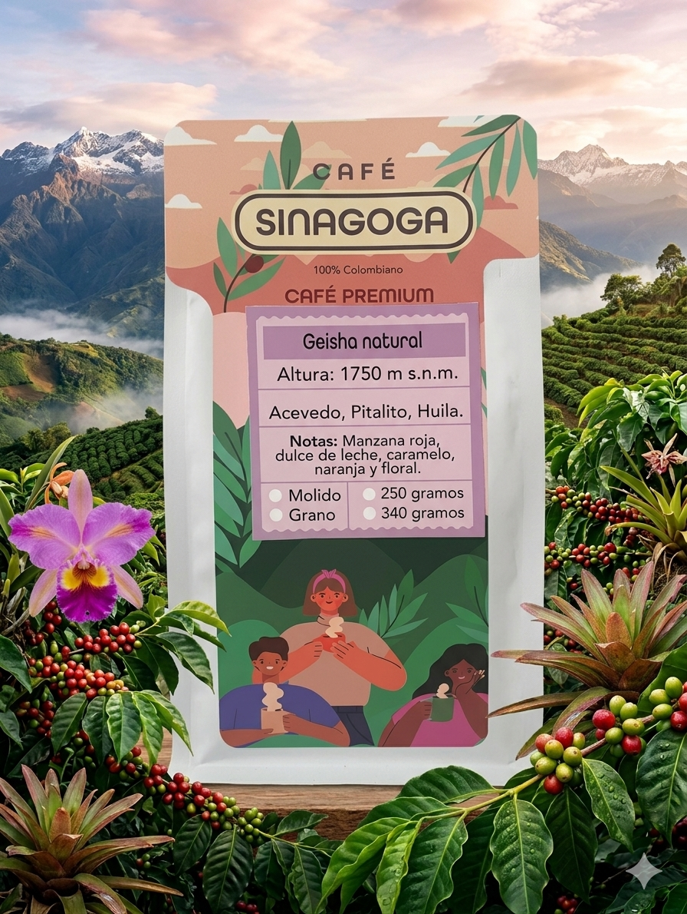
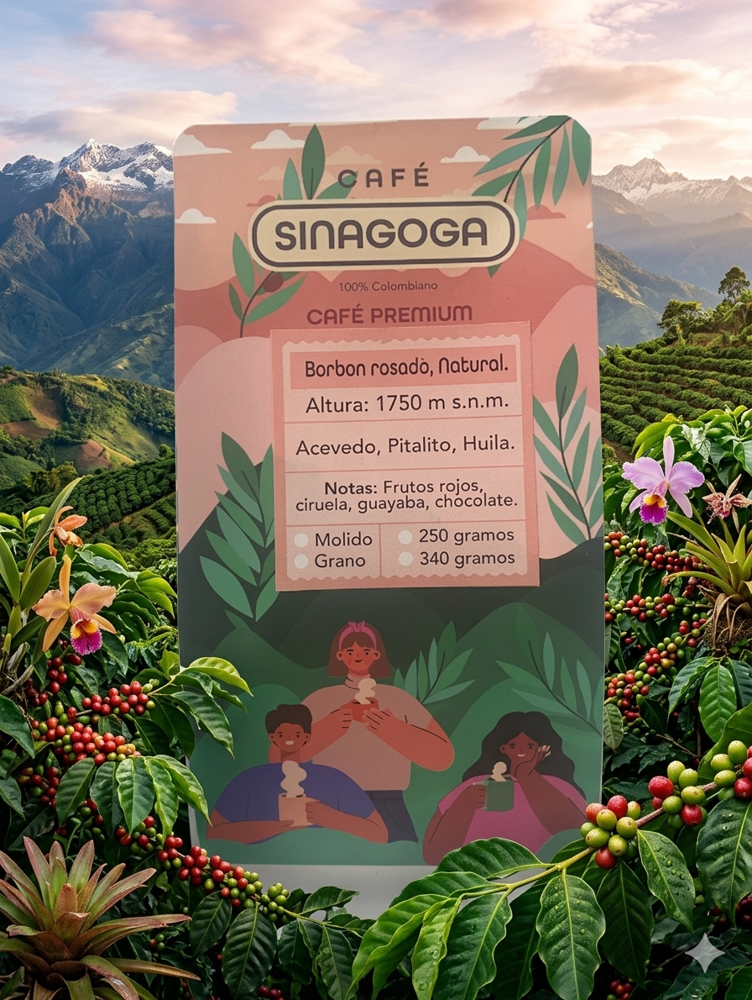
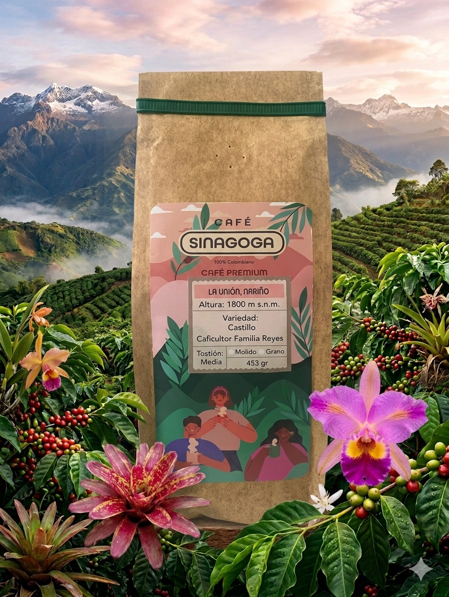

100% Colombian
Origin coffees with regional identity from Huila and Nariño.
Café Sinagoga brings together landscape, origin, and premium presentation to create a memorable coffee experience. Available in Charlotte with local delivery or pickup, each coffee offers a distinctive regional identity and a well-defined cup profile.
Origin coffees with regional identity from Huila and Nariño.
Pack sizes shown in grams and ounces for clarity in the US market.
Delivery and pickup available in Charlotte, North Carolina.
Real product photography builds trust. The page highlights variety, brewing context, and the visual identity of Café Sinagoga through a warm and premium aesthetic.



From floral and fruit-forward notes to a more classic origin profile, the collection is built for different preferences without losing its Colombian character.

Origin: Acevedo, Pitalito, Huila, Colombia
Altitude: 1750 masl
An elegant, aromatic profile with sweet, citrus, and floral layers. Ideal for customers looking for a more refined and memorable specialty coffee experience.

Origin: Acevedo, Pitalito, Huila, Colombia
Altitude: 1750 masl
A vibrant fruit-forward cup with juicy sweetness and a rounded finish. Excellent for buyers who want complexity and balance in the same brew.

Origin: La Unión, Nariño, Colombia
Altitude: 1800 masl
A Colombian origin option grown by Familia Reyes. Built for customers looking for a traditional, balanced cup that reflects the coffee character of Nariño.
Clear pricing, defined flavor profiles, strong origin storytelling, and a direct WhatsApp ordering channel make the purchase decision easier while elevating the brand perception.
Message on WhatsAppHuila and Nariño provide immediate differentiation and product credibility.
They guide buyer choice and turn curiosity into purchase intent.
Order directly through WhatsApp with minimal friction.
Messaging tailored to customers in Charlotte, North Carolina.
Order by direct WhatsApp message. Local delivery is available, and pickup is offered at 5680 Grand Canal Way, Apt K, Charlotte, NC 28270. Coffee prices are fixed; delivery cost may vary depending on the location.
Order on WhatsAppGeisha and Pink Bourbon are available as whole bean or ground. Castillo is available ground only. A concise portfolio with strong identity for more effective selling.